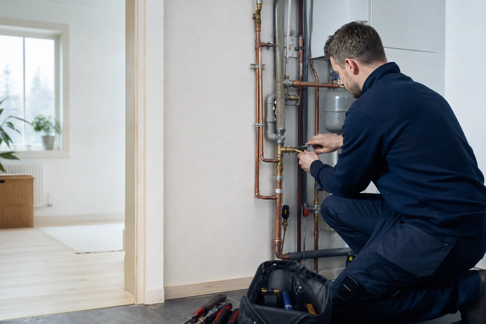
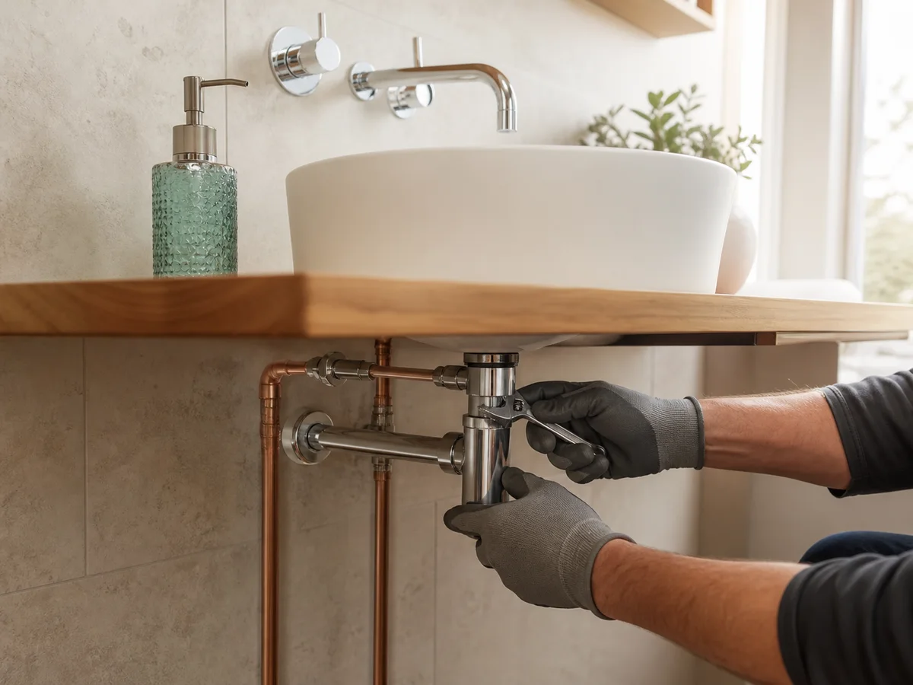

VVS-service & reparation
Hjälp med läckande blandare, synliga rörproblem, ventiler och andra vanliga VVS-behov i hem och mindre fastigheter.
Kontakta ossLokal VVS-service i Älta
Ozzys Rörservice hjälper dig med VVS-installationer och reparationer i Älta, Nacka och närliggande områden – med en tydlig kontakt från första fråga till färdigt arbete.

VVS-hjälp nära dig
Från mindre serviceärenden till planerade installationer. Vi utgår från problemet, förklarar nästa steg och hjälper dig vidare med en lösning som passar fastigheten.
Hjälp med läckande blandare, synliga rörproblem, ventiler och andra vanliga VVS-behov i hem och mindre fastigheter.
Kontakta ossVVS-arbeten i samband med renovering, byte av blandare och anslutning av sanitetsprodukter.
Kontroll, byte och installation av rördelar och anslutningar för ett tryggt vattenflöde i vardagen.
Praktisk hjälp med VVS-installationer kopplade till värme, radiatorer och bostadens tekniska system.

Rörmokare i Älta
När du söker VVS-hjälp i Älta eller Nacka ska det vara enkelt att få kontakt med någon som förstår både jobbet och området.
Ozzys Rörservice AB har varit verksamt sedan 2010 och är auktoriserat av Säker Vatten sedan 2017. Företaget arbetar med VVS-installationer och reparationer och har sin utgångspunkt på Oxelvägen i Älta.
Från fråga till åtgärd
Ring eller mejla och berätta vad som behöver kontrolleras, repareras eller installeras.
Omfattning och nästa steg klargörs innan arbetet bokas in.
Arbetet utförs med fokus på en säker, praktisk och hållbar lösning.
VVS i Nacka
Behöver du en rörmokare i Älta för service, reparation eller en planerad installation? Med en lokal kontakt blir vägen från fråga till åtgärd kortare. Ozzys Rörservice hjälper kunder i Älta, Nacka och omkringliggande områden med praktiska VVS-arbeten.
Vid renovering av badrum eller kök är rätt utförda vatten- och avloppsanslutningar en viktig del av helheten. Ta kontakt tidigt, beskriv projektet och få en första bedömning av hur arbetet kan planeras.
Vanliga frågor
Ju tydligare du kan beskriva problemet eller projektet, desto enklare blir den första bedömningen.
Företaget utgår från Älta och vänder sig till kunder i Nacka och närliggande delar av Stockholms län.
Kontakta Ozzys Rörservice med en kort beskrivning av renoveringen och vilka installationer som berörs, så kan ni gå igenom förutsättningarna.
Ja. Ozzys Rörservice AB finns registrerat som auktoriserat företag hos Säker Vatten sedan 2017.
Ring 070-045 93 69 för direktkontakt eller mejla en beskrivning till ozzys-rorservice@hotmail.com.
Kontakta Ozzys Rörservice
Berätta kort om ditt VVS-ärende och var arbetet ska utföras. Ring för direktkontakt eller skicka ett mejl när det passar dig.